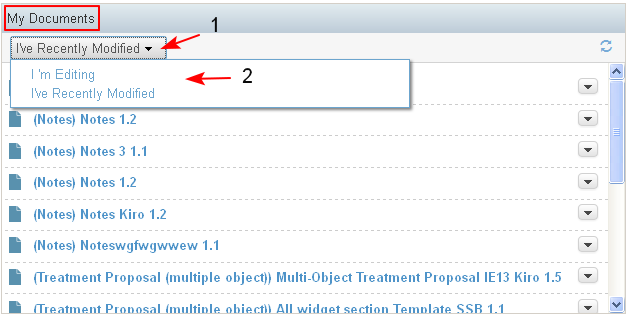
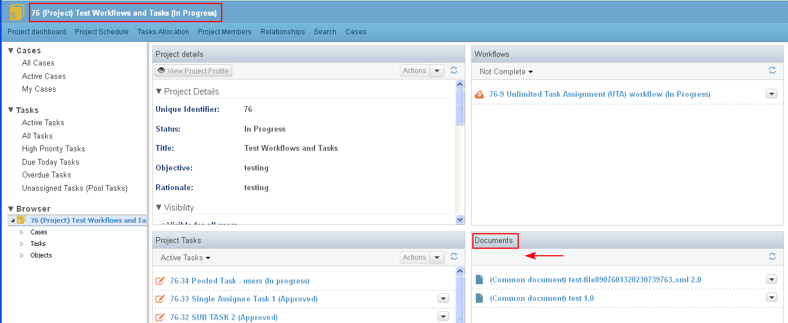
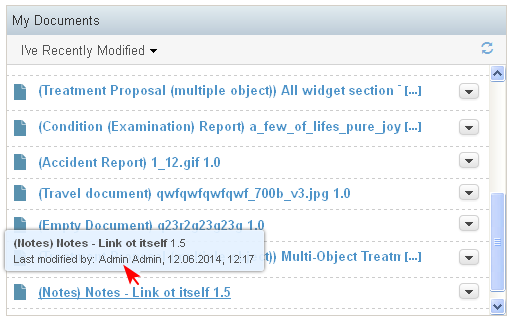
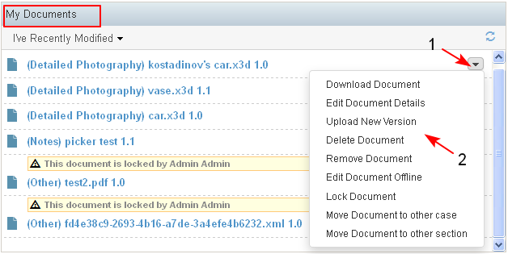

The use case describes the requirements for displaying documents in the Documents dashlet.
The Documents dashlet is context dependent and the content is different in all three dashboards - Personal, Project and Case.
- On the Personal dashboard in the Documents dashlet are visible all documents which are locked for the user for edit and the documents recently modified by the user.
There is a filter (1-2) which displays:
I'm Editing - only documents that are locked for editing by the current user
I've Recently Modified - only documents that are modified the last 28 days by the user. This value is set by default.
(Not Ready) Favorites - showing only favorite documents

- On the Project dashboard and on the Case dashboard in the Documents dashlet are visible only the recently modified documents, which means the documents modified in the last 28 days.
If there are not documents which have been modified the last 28 days then the dashlet is empty.

- For each document in the dashlet the following information is displayed: Document Id, Document Title, Modified by, Modified on. They are a link which when selected, the user is transferred to the document preview page. There is a tool tip which displays more information about the document (Last modified by, time stamp of last modification)

- Next to each document there is list of actions that could be performed on it (1-2). The actions depend on the user permissions. In general they include: Upload New Version, Edit offline, Move, Delete etc
